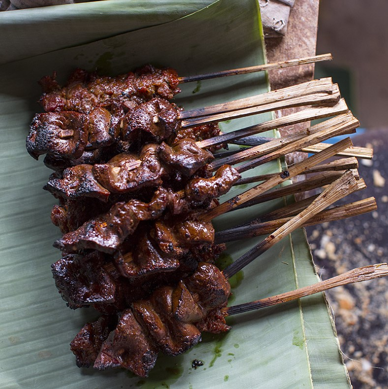

Herbs and spices used in the Khmer kitchen.
Some of the highlights include, kampot peppers, and salt from the sea

Let Me Tell You About This Cucumber
Learn about the various vegetables that Cambodians use in their cuisine

You call that a fruit?
Fruits are abundant in Cambodia and it's easy to lose track of which are edible and which are tasty.

We have the meats
Cambodians eat a lot of fish. Don't let that overshadow items such as BBQ Beef Skewers